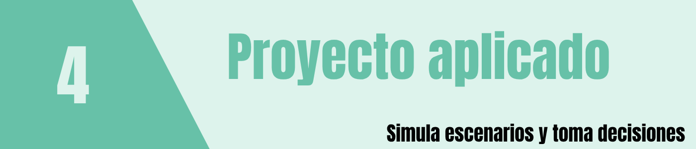

El proyecto tiene como propósito integrar los conceptos desarrollados en el curso de Teoría de Probabilidades mediante la construcción de un gemelo digital probabilístico de un sistema, proceso o servicio observable dentro de la Universidad.
Para efectos de este curso, se entenderá el gemelo digital como una representación computacional simplificada y dinámica de un sistema real, construida a partir de variables aleatorias y modelos de probabilidad. El modelo deberá permitir reproducir mediante simulación el comportamiento del sistema, modificar algunos de sus parámetros y analizar cómo cambian los resultados.
No se espera construir un gemelo digital industrial de alta complejidad. El énfasis estará en la modelación probabilística, la interpretación de la incertidumbre y la simulación del comportamiento del sistema utilizando R y Shiny.
El proyecto deberá evidenciar la aplicación de varios de los conceptos estudiados durante el curso, entre ellos:
Entre los modelos de probabilidad que pueden utilizarse se encuentran:
Modelos discretos
Modelos continuos
La selección de una distribución deberá estar justificada por el comportamiento de la variable que se desea representar y no únicamente por la facilidad para utilizarla.
El gemelo digital deberá representar un sistema mediante al menos cuatro variables aleatorias o componentes probabilísticos relevantes. Se espera que el proyecto combine diferentes tipos de variables y distribuciones cuando la naturaleza del sistema así lo permita.
Como mínimo, el proyecto deberá:
El tema debe corresponder a un sistema o proceso relacionado con la Universidad. Algunos ejemplos son:
Estos ejemplos son orientativos. Cada grupo puede proponer un sistema diferente, siempre que pueda ser representado razonablemente mediante variables aleatorias y modelos de probabilidad.
Suponga que un grupo decide representar el funcionamiento de una cafetería universitaria durante la hora de almuerzo. El modelo podría incluir:
| Componente del sistema | Variable aleatoria | Posible distribución |
|---|---|---|
| Número de estudiantes que llegan por intervalo | \(X\) | Poisson |
| Tiempo entre llegadas | \(T_1\) | Exponencial |
| Tiempo de atención | \(T_2\) | Gamma o Weibull |
| Compra o no compra de un producto | \(Y\) | Binomial/Bernoulli |
| Proporción de estudiantes que seleccionan una opción | \(P\) | Beta |
El grupo deberá justificar cada selección y estimar los parámetros utilizando datos observados, información disponible, una muestra piloto o supuestos razonables claramente documentados.
El tablero podría permitir modificar, por ejemplo, la tasa promedio de llegada, el número de puntos de atención o los parámetros del tiempo de servicio, y observar cómo cambian las filas, los tiempos de espera y el número de estudiantes atendidos.
Fecha sugerida: 23 de septiembre
Cada grupo deberá presentar una propuesta breve que contenga:
Documento breve o presentación de máximo 3 diapositivas.
El propósito de esta entrega es validar que el sistema seleccionado tenga el alcance apropiado y pueda desarrollarse durante las semanas disponibles.
Fecha sugerida: 14 de octubre
En esta etapa deberá presentarse la estructura del gemelo digital.
La entrega debe incluir:
Construir una tabla como la siguiente:
| Variable | Descripción | Tipo | Distribución propuesta | Parámetros | Justificación |
|---|---|---|---|---|---|
| \(X_1\) | Discreta/Continua | ||||
| \(X_2\) | Discreta/Continua | ||||
| \(X_3\) | Discreta/Continua | ||||
| \(X_4\) | Discreta/Continua |
Para cada variable deberá indicarse:
Cuando dos o más variables estén relacionadas, deberá discutirse la conveniencia de utilizar correlación, probabilidad condicional o una representación conjunta.
Los parámetros podrán obtenerse mediante:
Todos los parámetros deberán estar documentados y justificados.
Incluir un esquema del tablero Shiny indicando:
Fecha: 12 de noviembre
Corresponde a la presentación final del proyecto.
Cada grupo deberá realizar una presentación oral y demostrar el funcionamiento del tablero Shiny.
La presentación deberá explicar de manera clara:
No debe limitarse a mostrar el código. El énfasis debe estar en la interpretación probabilística del sistema.
El tablero deberá permitir interactuar con el gemelo digital.
Como mínimo deberá contener:
Se valorará especialmente que el usuario pueda plantear preguntas del tipo:
¿Qué ocurre en el sistema si cambia una de sus condiciones?
Por ejemplo:
| Semana | Fechas | Actividad principal |
|---|---|---|
| 1 | 16 - 22 septiembre | Presentación del proyecto, conformación de grupos y selección del sistema |
| 2 | 23 - 29 septiembre | Entrega 1: tema y objetivo |
| 3 | 30 septiembre - 6 octubre | Identificación de variables aleatorias y recolección de información |
| 4 | 7 - 13 octubre | Selección de distribuciones y estimación inicial de parámetros |
| 5 | 14 - 20 octubre | Entrega 2: descripción y modelo probabilístico |
| 6 | 21 - 27 octubre | Construcción de la simulación en R |
| 7 | 28 octubre - 3 noviembre | Desarrollo del tablero Shiny |
| 8 | 4 - 10 noviembre | Integración, validación, análisis de escenarios y preparación de la presentación |
| 9 | 11 - 12 noviembre | Entrega 3: presentación final y demostración del gemelo digital |
Una posible organización del tablero Shiny es:
Descripción del sistema universitario seleccionado y representación gráfica o esquemática de su funcionamiento.
Presentación de las variables aleatorias, distribuciones y parámetros.
Controles interactivos para modificar parámetros y ejecutar el modelo.
Indicadores, probabilidades, valores esperados, variabilidad y gráficos relevantes.
Comparación entre dos o más configuraciones del sistema.
Principales hallazgos e interpretación de los resultados.
| Componente | Porcentaje |
|---|---|
| Definición y comprensión del sistema | 10% |
| Formulación de variables aleatorias | 15% |
| Selección y justificación de distribuciones | 15% |
| Estimación y justificación de parámetros | 15% |
| Aplicación de conceptos de probabilidad | 15% |
| Simulación y funcionamiento del gemelo digital | 15% |
| Tablero Shiny e interacción con escenarios | 10% |
| Presentación, interpretación y conclusiones | 5% |
| Total | 100% |
Al finalizar el proyecto, el grupo debe estar en capacidad de responder:
¿Cómo puede la teoría de probabilidades representar la incertidumbre de un sistema real de la Universidad y permitir experimentar con su comportamiento mediante un gemelo digital?